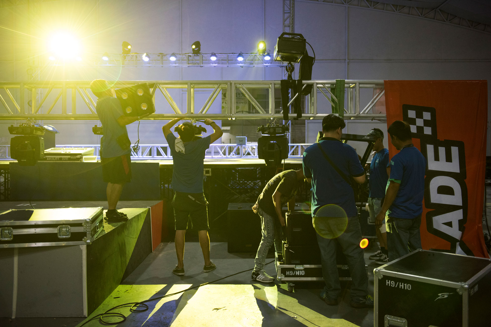
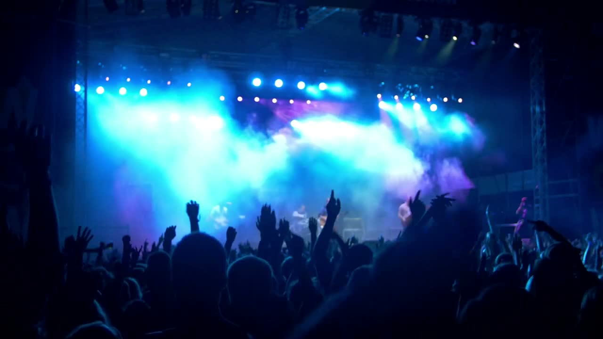

Engineering Solutions · Since 1998
Tour-grade staging, audio, lighting, and LED video. Crew, logistics, and the full show, delivered anywhere in the Philippines.
Three acts
Act I · Sound
Premium indoor, concert-grade outdoor, fixed-install. Skip the spec sheet. Feel it.
Act II · Light
Light is nothing without the dark it carves. Move your cursor — or drag a finger on a tablet — and lift the scene out of shadow.
Act III · Stage
Rated-for-the-road platforms, themed design, trussing rigged right. An empty hall becomes a stage that holds the night.
Build mine →
Figures shown are placeholders for the meeting. We will set the real numbers with you.
What we do
Staging, trusses, audio, lighting, LED video. Take one system, or hand us the whole show.
Owned, pro-grade platforms and themed-design staging, engineered for any venue.
Premium indoor, concert-grade outdoor, and fixed-install systems that fill the room.
Turn it up →High-end moving luminaires, LED, intelligent and outdoor architectural design.
Light it up →Indoor and outdoor all-weather LED walls. Bright at any distance, no visible joins.
Go big →Equipment, crew, freight, accommodation, and local labour. The whole show, anywhere.
Run the show →Owned, pro-grade inventory. Full-time crew. On-time every time, in the most challenging corners of the country.
Trussing, lighting, and stage, start to strike.

A selection of recent productions. Full portfolio on request, and ready to fill with your own event photos.
Who we serve
Productions that fill arenas.
Launches and conferences that land.
Big-screen and sound for live play.
Showfloors that pull the room in.
Why StagePro
Our nationwide reputation for unparalleled customer service comes from the innovative application of the latest technology alongside the very best technical and operational personnel. Long-term experience and a network of suppliers let major projects be delivered with local knowledge, cost-effectively, wherever they are.
Let's build it →Equipment, crew, freight, and local labour under one roof.
Not sub-rented. We own every system we run.
Logistics for the most challenging areas.
Best-in-class crew on every build.
Start the build
Answer a few quick questions and we will size the right package. No spam, no pushy calls, just a real reply, usually within one business day.
About a minute. We only use your details to reply about your event.